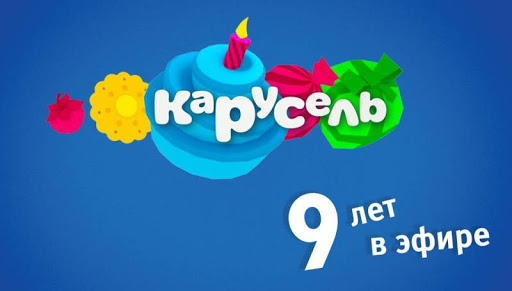
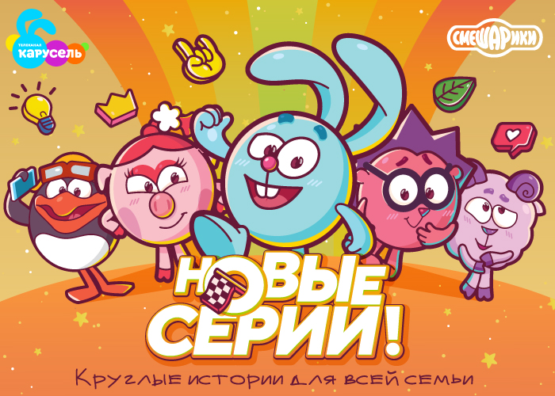

| Детско-юношеский телеканал «Карусель» | YOUTUBE |
|||
|
Карусель (телеканал) Концепция Награды и премии Вещание |
Краткая информация |
|||
|  | Карусель (телеканал) «Карусель» — российский федеральный государственный международный телеканал для детей и юношества. Вещает круглосуточно из Москвы, из телецентра «Останкино» (АСК-3) по всей России и во многих странах мира. Является крупнейшим по охвату детским телеканалом России. Совместный проект «Первый канал. Всемирная сеть» и «ВГТРК». Начал вещание 27 декабря 2010 года в 5:00 показом программы «Прыг-Скок Команда». Позиционируется как главный российский детский телеканал в мире. Был одним из двух федеральных телеканалов (вместе с телеканалом «Россия-Культура»; до запуска ОТР), которые вещали без рекламы (с 2011 года — спонсорские ролики). В 2014 году на телеканале появилась реклама. Первоначально среди рекламных роликов были представлены различные товары для детей, но из-за привлечения женской аудитории старше 40 лет (по результатам телеизмерений) появилась реклама продуктов питания и лекарственных средств. Возраст целевой аудитории — от 4 до 99 лет. Вещательная концепция и форматы эфира разрабатываются при участии детских психологов и педагогов. Производством программ занимаются как «ВГТРК» и «Первый канал. Всемирная сеть», так и сторонние производители («АТВ», «ВайТ Медиа», «M-production», «АРС» и «АСС-ТВ»). Основу эфира (около 60 %) составляют познавательные и развлекательные программы своего производства, остальное — российские и зарубежные художественные и анимационные фильмы.
Концепция |
|||
|  | Награды и премии Телеканал дважды становился победителем в номинации «Лучший детский канал» в престижной Европейской премии в области тематического телевидения Hot Bird TV Awards. В январе 2014 года создатели детско-юношеского телеканала «Карусель» стали лауреатами премии Правительства Российской Федерации в области средств массовой информации за 2013 год. 23 ноября 2017 года сайт телеканала получил статуэтку премии Рунета-2017 в номинации «Здоровье, развлечение и отдых».
Вещание С 1 сентября 2011 по 22 июля 2019 года вещал в трёх поясных версиях — «+0» (Московское время), «+3» (Омское время) и «+7» (Владивостокское время). С 23 июля 2019 года по настоящее время вещает в пяти поясных версиях — «+0» (Московское время), «+2» (Екатеринбургское время), «+4» (Красноярское время), «+7» (Владивостокское время) и «+8» (Магаданское время). Также вещает за рубежом под названием «Carousel International». Международная версия имеет небольшие изменения в сетке передач по сравнению с российской. До сентября 2016 года «Карусель» был одним из немногих российских телеканалов, который находился в списке адаптированных иностранных телеканалов и вещал на территории Украины. В Болгарии, Литве, Латвии, Эстонии, Чехии, Словении, Кипре и Франции этот канал доступен также как кабельный. В 2014 году заменил собою украинский телеканал СТБ в Крыму после крымских событий весны 2014 года. С 1 марта 2017 года телеканал перешёл на вещание в формате 16:9. С 27 марта 2020 года началось вещание канала в формате высокой чёткости в цифровом HD-мультиплексе на 58 ТВК в Москве и Подмосковье. |
|||
| © 2010-2021, АО «Карусель». Все права защищены. Полное или частичное копирование материалов запрещено. | ||||